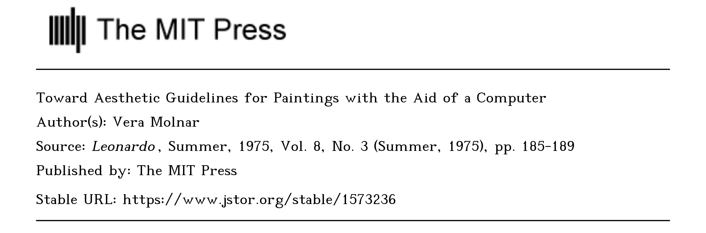

Leonardo和我的第一篇文章
从去年11月中完成初稿后一直搁置到今年3月初，一周密集地修改后于3月10号完成投稿。大概3个月后，6月2号收到第一轮意见并要求7月13号提交revision。最终于7月初一两周时间根据reviwer意见密集修改后，于7月8号第二次提交，当前等待结果中。
Leonardo的一些信息
Leonardo应该是 Art+Technology这个领域首屈一指的期刊。Metrics纬度，它是AHCI且在SJR分区排名中为Q1（Visual Art and Performing Art子类）。其他比较类似期刊有Digital Creativity，但最高rank是Q2。 也有CoDesign等其他高排位期刊，但都是偏设计类不是真正的Art+Technology，尤其是和art practice直接相关的期刊别无二选；从我目前的搜罗来看，可能 International Journal of Performance Arts and Digital Media 性质类似，但是它只是ESCI。
另有Poetics，Continuum，October，The Journal of Aesthetics and Art Criticism 等SSCI/AHCI期刊，似乎非常“文科”，待确定相关性。最近在想如果不是“Project”而偏纯文科，从文献中生发观点的文章应该去哪里；找到些 （AHCI）Art Journal 例如 OXford Art Journal (Oxford Academic) 和
Art Journal (Tylor & Francis) 等，需要进一步研究并总结到期刊列表。
本来关于Leonardo的权威性只是通过行业口碑的认知，但是它没有其他同类期刊的事实难免让人怀疑它这“第一”的含金量——到底是打遍天下无敌手的没有对手，还是真的没有竞争者、属于自己和自己玩儿的没有对手。但最近在做一些关于Generative Art的Research，偶然的一些发现让我彻底对Leonardo有了全新的认知。
 来自Google Search网页截图，搜索 Vera Molnar。
来自Google Search网页截图，搜索 Vera Molnar。
我在找到Semantic Shcolar上找到一些关于古早时期的Artist做Computer Art的相关research，例如关于Vera Molnar的Toward Aesthetic Guidelines for Paintings with the Aid of a Computer发表于Leonardo。本来合情合理，研究Vera Monlar的Generative Art发在Leonardo上没有问题，但是当看到作者和发表时间的时候事情就变得有意思起来。

Toward Aesthetic Guidelines for Paintings with the Aid of a Computer PDF截图。
这是一篇Vera Molnar写的关于自己的Practice的Paper！类似地，Georg Nees，Michael Noll 还有George Stiny and Michael Thompson等artist不仅仅写自己的work，还互相发评论对方publication的文章。Leonardo就是这些早期artist关于Art+Technology展示和讨论的舞台。这大概才是Leonardo的底色，不是Indexing和Ranking的问题，它是原生的Art+Technology Research&Publication Platform！
Jul 23， 2023 南沙 （未完待续）。